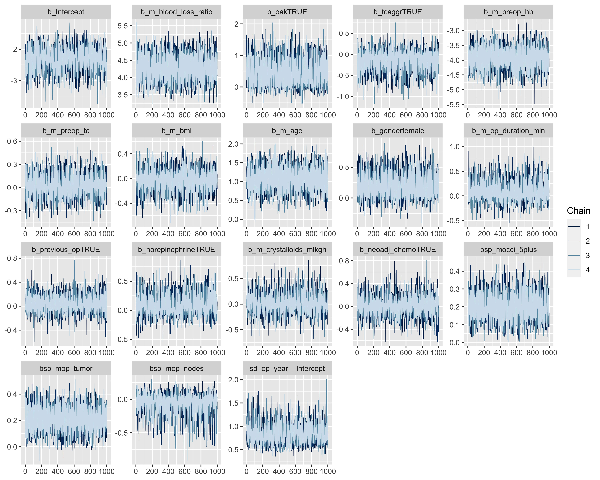
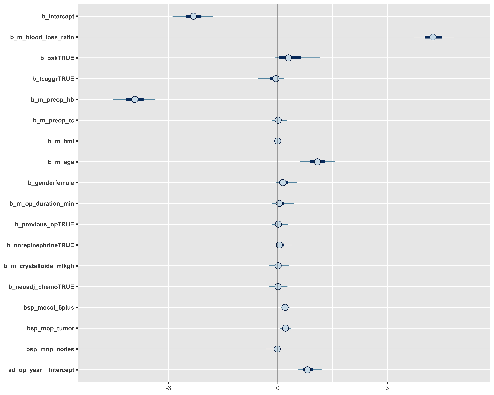
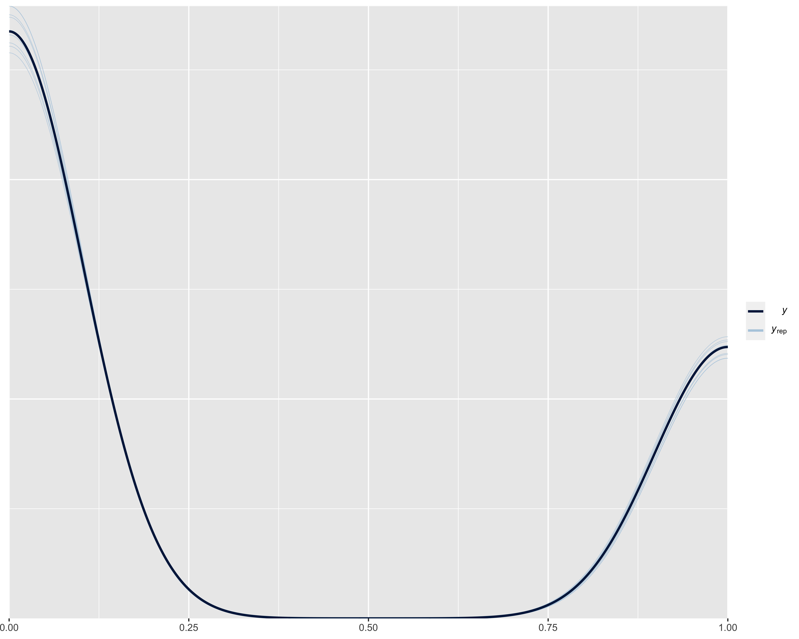
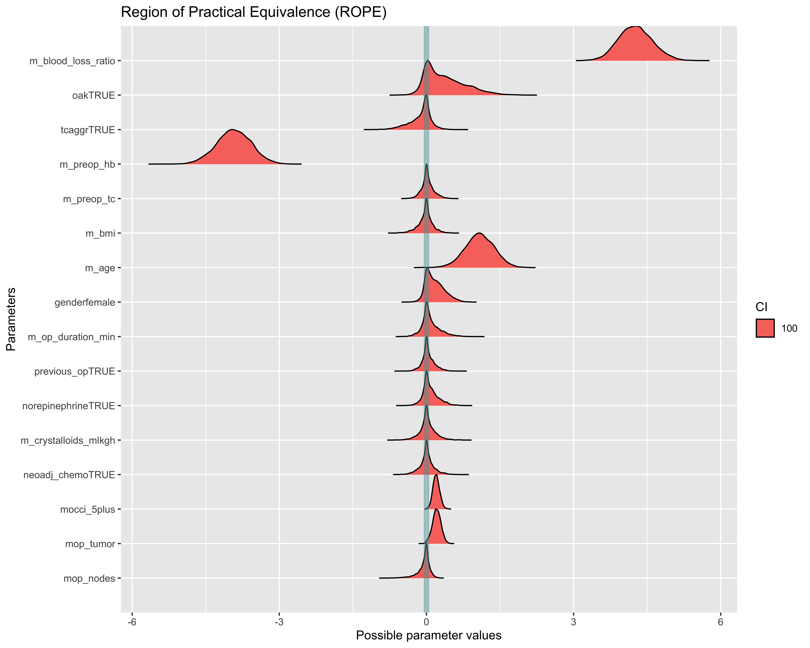
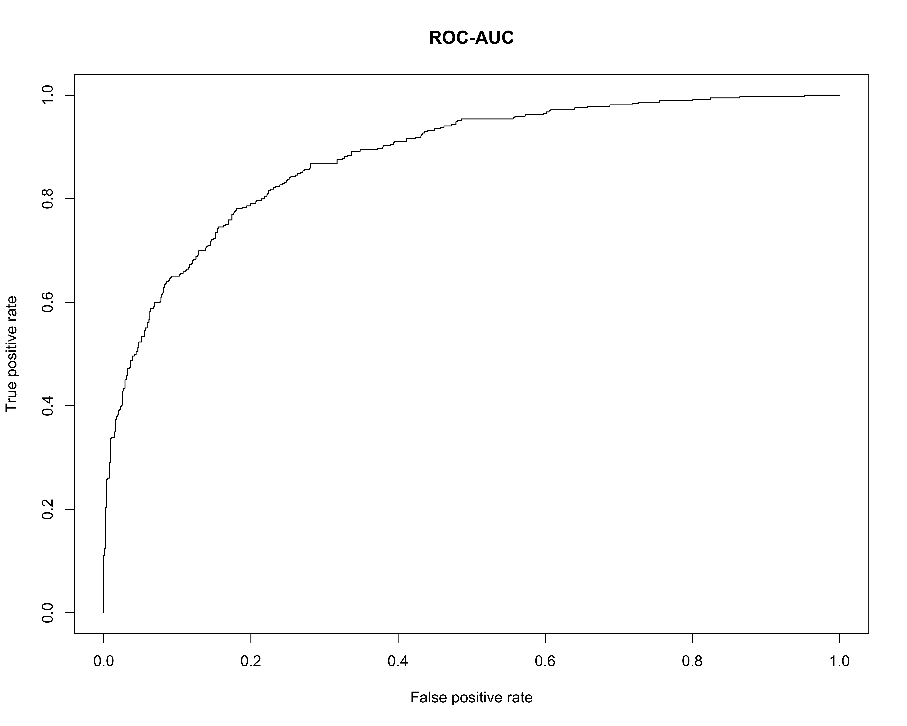
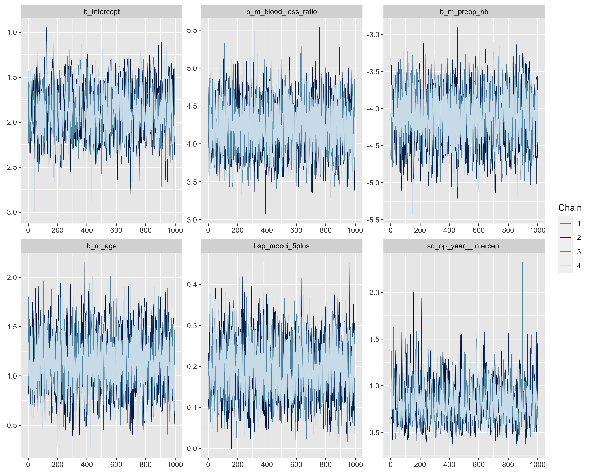
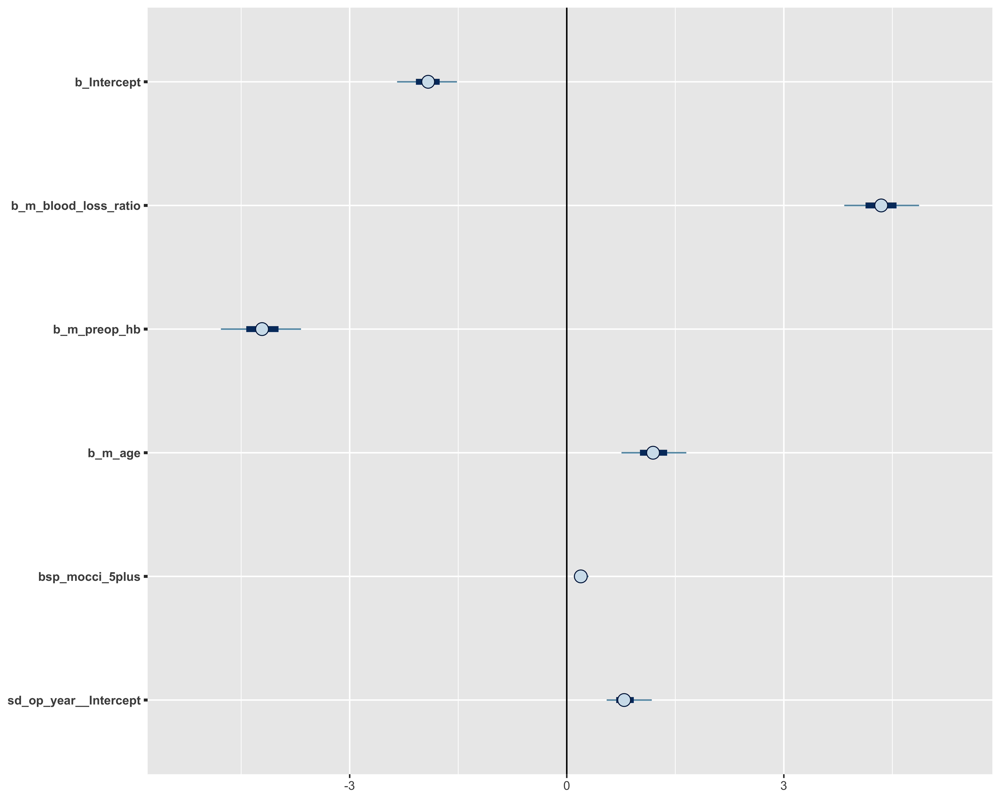
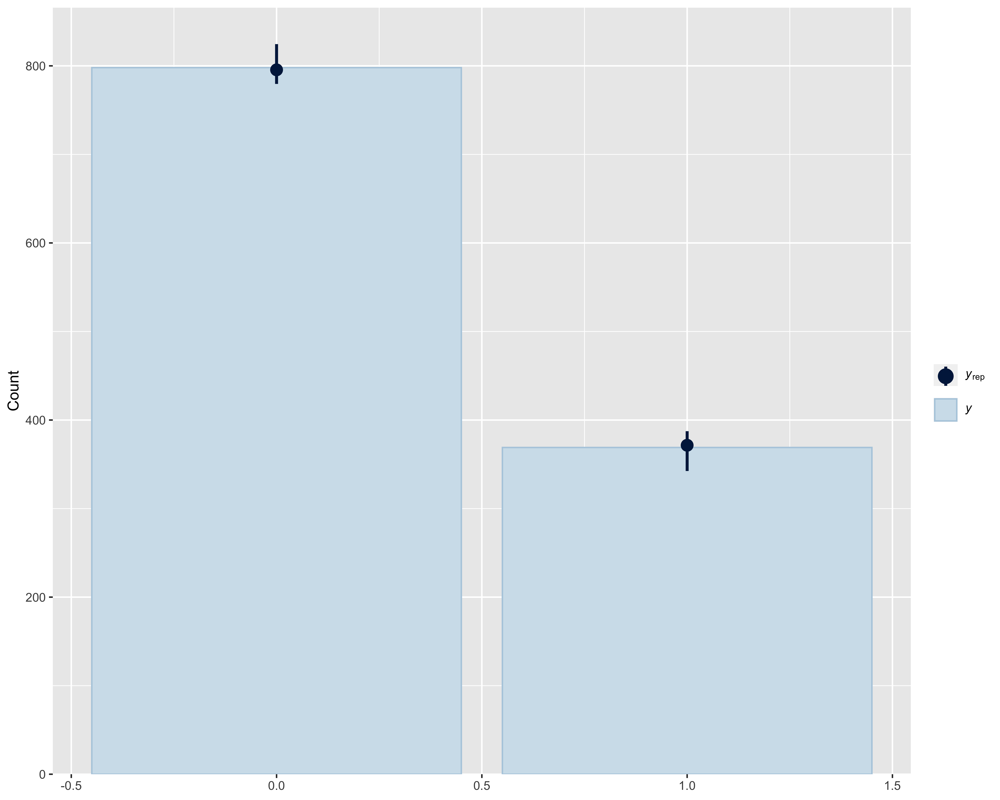
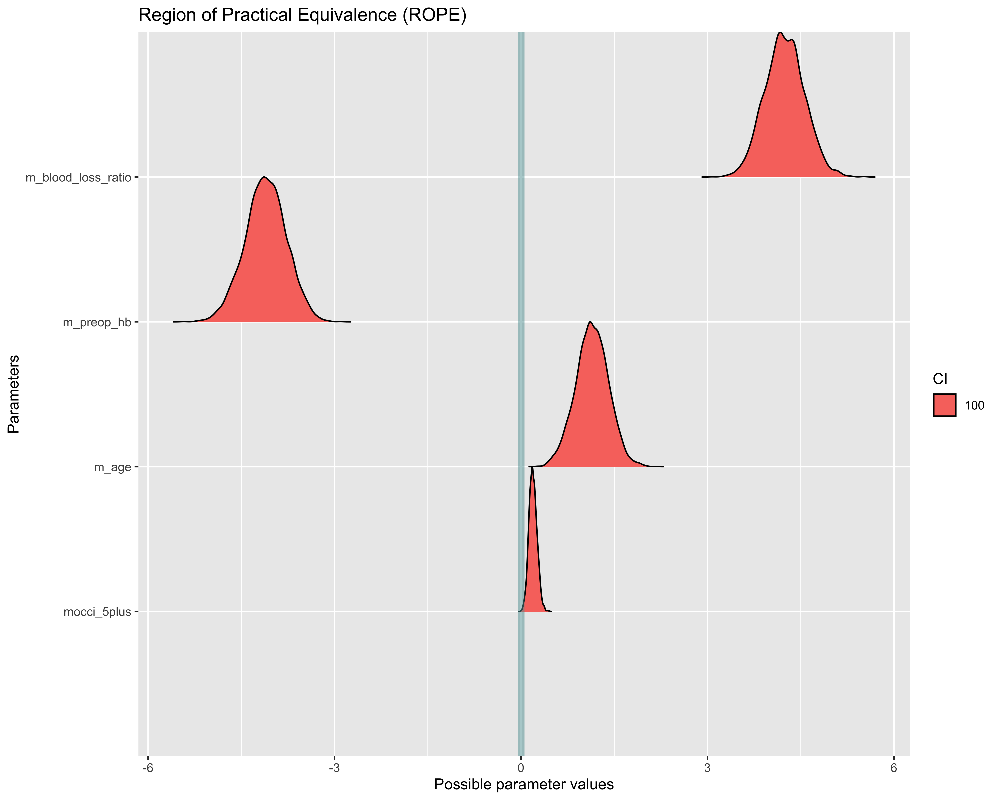
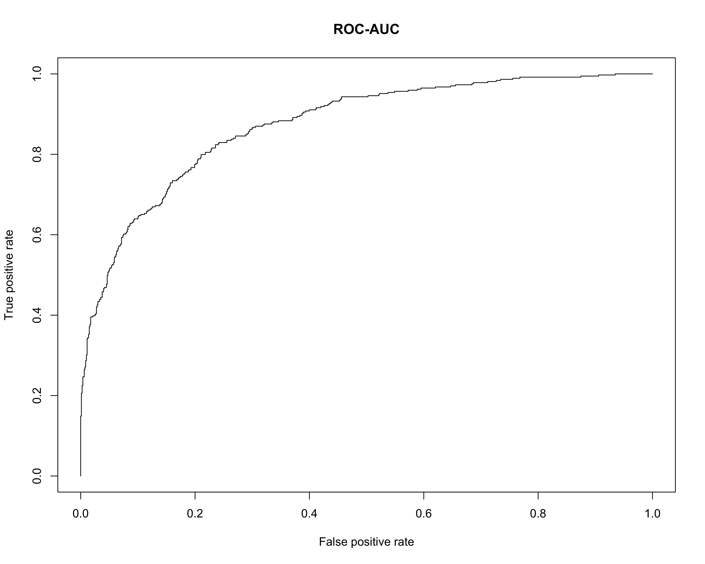

3 Results
3.1 Data plots


3.2 Model outputs
3.2.1 Models with intraoperative transfusion as response
3.2.1.1 Full model
3.2.1.1.1 Diagnostics
#> No divergences to plot.
3.2.1.1.2 Posterior predictive check plot
#> Using 10 posterior samples for ppc type 'bars' by default.
3.2.1.1.3 Summary
| Parameter | Median | CI | CI_low | CI_high | |
|---|---|---|---|---|---|
| 2 | b_Intercept | -2.316 | 95 | -2.976 | -1.652 |
| 4 | b_m_blood_loss_ratio | 4.256 | 95 | 3.619 | 4.937 |
| 12 | b_oakTRUE | 0.2904 | 95 | -0.2074 | 1.212 |
| 14 | b_tcaggrTRUE | -0.05321 | 95 | -0.6047 | 0.275 |
| 8 | b_m_preop_hb | -3.926 | 95 | -4.657 | -3.283 |
| 9 | b_m_preop_tc | 0.009459 | 95 | -0.2185 | 0.3044 |
| 5 | b_m_bmi | -0.005621 | 95 | -0.3602 | 0.2736 |
| 3 | b_m_age | 1.086 | 95 | 0.5356 | 1.689 |
| 1 | b_genderfemale | 0.1352 | 95 | -0.1239 | 0.5736 |
| 7 | b_m_op_duration_min | 0.04048 | 95 | -0.2655 | 0.4862 |
| 13 | b_previous_opTRUE | 0.01464 | 95 | -0.2235 | 0.3102 |
| 11 | b_norepinephrineTRUE | 0.0425 | 95 | -0.2008 | 0.4329 |
| 6 | b_m_crystalloids_mlkgh | 0.006921 | 95 | -0.3254 | 0.3697 |
| 10 | b_neoadj_chemoTRUE | 0.003186 | 95 | -0.3261 | 0.3225 |
| 15 | bsp_mocci_5plus | 0.1992 | 95 | 0.06772 | 0.3381 |
| 17 | bsp_mop_tumor | 0.2094 | 95 | 0.03192 | 0.3742 |
| 16 | bsp_mop_nodes | -0.01825 | 95 | -0.3614 | 0.1658 |
| p_MAP | pd | ROPE_CI | ROPE_low | ROPE_high | ROPE_Percentage | |
|---|---|---|---|---|---|---|
| 2 | 0 | 1 | 100 | -0.055 | 0.055 | 0 |
| 4 | 0 | 1 | 100 | -0.055 | 0.055 | 0 |
| 12 | 0.9866 | 0.8448 | 100 | -0.055 | 0.055 | 0.206 |
| 14 | 0.9974 | 0.6905 | 100 | -0.055 | 0.055 | 0.3543 |
| 8 | 0 | 1 | 100 | -0.055 | 0.055 | 0 |
| 9 | 0.9997 | 0.5665 | 100 | -0.055 | 0.055 | 0.462 |
| 5 | 0.9965 | 0.539 | 100 | -0.055 | 0.055 | 0.4218 |
| 3 | 0.006724 | 0.9988 | 100 | -0.055 | 0.055 | 0.00125 |
| 1 | 0.9882 | 0.824 | 100 | -0.055 | 0.055 | 0.2795 |
| 7 | 0.9992 | 0.6548 | 100 | -0.055 | 0.055 | 0.3762 |
| 13 | 0.9994 | 0.5903 | 100 | -0.055 | 0.055 | 0.4655 |
| 11 | 0.999 | 0.674 | 100 | -0.055 | 0.055 | 0.3892 |
| 6 | 0.9996 | 0.546 | 100 | -0.055 | 0.055 | 0.4098 |
| 10 | 0.9956 | 0.5248 | 100 | -0.055 | 0.055 | 0.4335 |
| 15 | 0 | 1 | 100 | -0.055 | 0.055 | 0.0155 |
| 17 | 0.08488 | 0.991 | 100 | -0.055 | 0.055 | 0.04225 |
| 16 | 0.9998 | 0.6158 | 100 | -0.055 | 0.055 | 0.5112 |
3.2.1.1.4 Region of practical equivalence
Using a ROPE range of -0.055 to 0.055 (\(0.1 \cdot \frac{\sqrt{3}}{\pi}\)) and a CI of 1.

3.2.1.1.5 ROC-AUC
#> AUC: 0.879159280314611
3.2.1.1.6 Conditional probability plot
3.2.1.2 Reduced model
3.2.1.2.1 Diagnostics
#> No divergences to plot.
3.2.1.2.2 Posterior predictive check plot
#> Using 10 posterior samples for ppc type 'bars' by default.
3.2.1.2.3 Summary
| Parameter | Median | CI | CI_low | CI_high | p_MAP | |
|---|---|---|---|---|---|---|
| 1 | b_Intercept | -1.882 | 95 | -2.38 | -1.392 | 0 |
| 3 | b_m_blood_loss_ratio | 4.238 | 95 | 3.631 | 4.851 | 0 |
| 4 | b_m_preop_hb | -4.106 | 95 | -4.753 | -3.466 | 0 |
| 2 | b_m_age | 1.141 | 95 | 0.6149 | 1.642 | 0 |
| 5 | bsp_mocci_5plus | 0.1888 | 95 | 0.06218 | 0.3124 | 0.005719 |
| pd | ROPE_CI | ROPE_low | ROPE_high | ROPE_Percentage | |
|---|---|---|---|---|---|
| 1 | 1 | 100 | -0.055 | 0.055 | 0 |
| 3 | 1 | 100 | -0.055 | 0.055 | 0 |
| 4 | 1 | 100 | -0.055 | 0.055 | 0 |
| 2 | 1 | 100 | -0.055 | 0.055 | 0 |
| 5 | 0.9998 | 100 | -0.055 | 0.055 | 0.0125 |
3.2.1.2.4 Region of practical equivalence
Using a ROPE range of -0.055 to 0.055 (\(0.1 \cdot \frac{\sqrt{3}}{\pi}\)) and a CI of 1.

3.2.1.2.5 ROC-AUC
#> AUC: 0.873386039624811